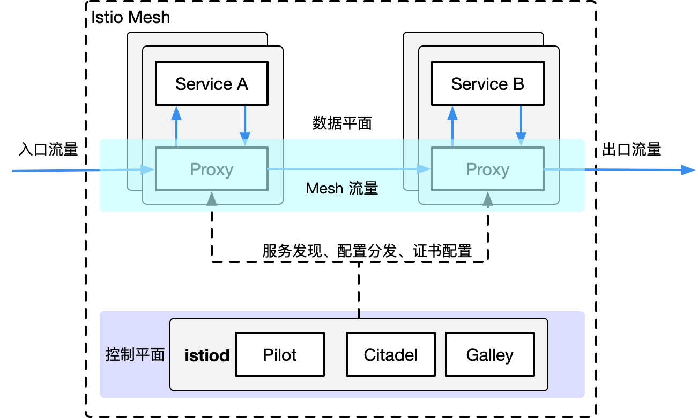

架构
Table of Contents
简介
作为新一代 Service Mesh 产品的领航者，Istio 创新性的在原有网格产品的基础上，添加了控制平面这一结构，使其产品形态更加的完善
这也是为什么它被称作第二代 Service Mesh 的原因，在此之后，几乎所有的网格产品都以此为基础进行架构的设计
毫不夸张的说，Istio 作为 Service Mesh 领域的弄潮儿，引领了时代的潮流，这也从一个侧面印证了它一经推出就大红大紫的原因
Istio 的架构组成
Istio 的架构由两部分组成，分别是数据平面（Data Plane）和控制平面（Control Plane）：
- 数据平面：由整个网格内的 sidecar 代理组成
- 这些代理以 sidecar 的形式和应用服务一起部署
- 每一个 sidecar 会接管进入和离开服务的流量，并配合控制平面完成流量控制等方面的功能
- 可以把数据平面看做是网格内 sidecar 代理的网络拓扑集合
- 控制平面：控制和管理数据平面中的 sidecar 代理，完成配置的分发、服务发现、和授权鉴权等功能
- 架构中拥有控制平面的优势在于，可以统一的对数据平面进行管理
试想一下，如果没有它，想对网格内的代理进行配置的更新操作，恐怕就不是一件轻松的事情了。这也正是为什么拥有控制平面的产品，对 Linkerd 这种第一代 Service Mesh 具有巨大竞争优势的原因
在 Istio 1.5 版本中，控制平面由原来分散的、独立部署的几个组件整合为一个单体结构 istiod，变成了一个单进程、多模块的组织形态

核心组件
下面简单的介绍一下 Istio 架构中几个核心组件的主要功能
Envoy
Istio 的数据平面默认使用 Envoy 作为 sidecar 代理 ，在未来也将支持使用 MOSN 作为数据平面。Envoy 将自己定位于高性能的 sidecar 代理，也可以认为它是第一代 Service Mesh 产品。可以说，流量控制相关的绝大部分功能都是由 Envoy 提供的，这主要包括三个部分：
- 路由、流量转移
- 弹性能力：如超时重试、熔断等
- 调试功能：如故障注入、流量镜像
Pilot
Pilot 组件的主要功能是将 路由规则 等配置信息转换为 sidecar 可以识别的信息，并下发给 数据平面 。可以把它简单的理解为是一个 配置分发器 （dispatcher），并辅助 sidecar 完成流量控制相关的功能
Citadel
Citadel 是 Istio 中专门负责 安全 的组件，内置有 身份 和 证书 管理功能，可以实现较为强大的授权和认证等操作
Galley
Galley 是 Istio 1.1 版本中新增加的组件，其目的是将 Pilot 和底层平台（如 Kubernetes）进行解耦。它分担了原本 Pilot 的一部分功能，主要负责配置的验证、提取和处理等功能
设计目标
Istio 一经发布就希望打造一个最终形态的 Service Mesh 产品，功能异常丰富，可以说是胸怀宇宙 在设计理念上，Istio 并未遵从最小可行性产品（MVP）的演进策略，而是较为激进的全盘压上，想借此提供一个完善而强大的产品和架构体系
下面的几点设计目标促成了其架构的形态：
- 对应用透明：从本质上来说，对应用透明是 Service Mesh 的特性，一个合格的 Service Mesh 产品都应该具有这一特性，否则也就失去了网格产品的核心竞争力
通过借助 Kubernetes 的 admission controller ，配合 webhook 可以完成 sidecar 的自动注入
在配置方面，也基本做到了对应用无侵入
- 可扩展性：Istio 认为，运维和开发人员随着深入使用 Istio 提供的功能，会逐渐涌现更多的需求，主要集中在策略方面。因此，为策略系统提供足够的扩展性，成为了 Istio 的一个主要的设计目标
Mixer 组件就是在这一理念下诞生的，它被设计为一个插件模型，开发人员可以通过接入各种适配器（Adapter），来实现多样化的策略需求 毫不夸张的说，Mixer 的这种插件设计为 Istio 提供了无限的扩展性
- 可移植性：考虑到现有云生态的多样性，Istio 被设计为可以支持几种不同的底层平台，也支持本地、虚拟机、云平台等不同的部署环境
不过从目前的情况来看，Istio 和 Kubernetes 还是有着较为紧密的依赖关系
- 策略一致性：Istio 使用自己的 API 将策略系统独立出来，而不是集成到 sidecar 中，这允许服务根据需要直接与之集成。同时，Istio 在配置方面也注重统一和用户体验的一致
一个典型的例子是路由规则都统一由虚拟服务来配置，可在网格内、外以及边界的流量控制中复用
变迁之旅
从 2017 年 5 月发布以来，Istio 经历了四个重要的版本和由此划分的三个发展阶段。在不到三年的产品迭代过程中，出现了两次重大的架构变动。功能的调整无可厚非，但架构的多次重构就较为少见了。来简要分析一下这个变迁历程。
- 0.1 版本：2017 年 5 月发布。作为第二代 Service Mesh 的开创者，宣告了 Istio 的诞生，也燃起了网格市场的硝烟与战火
- 1.0 版本：发布于 2018 年 7 月，对外宣传生产环境可用。从 0.1 到 1.0 版本，开发时间经历了一年多，但持续的发布了多个 0.x 版本，这一阶段处于快速迭代期
- 1.1 版本：发布于 2019 年 3 月，号称企业级可用的版本。一个小的版本号变化居然耗费了半年之久，其主要原因是出现了第一次架构重构，这一阶段算是调整期
1.5 版本：发布于 2020 年 3 月，再次进行架构的重建，将多组件整合为单体形态的 istiod。从 1.1 到 1.5 版本的一年中，Istio 开始遵循季节性发布，进入了产品的稳定发展期

在第一次架构变化中，Istio 团队认为虽然 Mixer 的插件模型为其带来了扩展性方面的优势，但与 Adapter 的相互依赖关系使得它会受到插件变化的影响 1.1 版本彻底贯彻了解耦原则，解决了存在的耦合问题，职责分明，结构清晰，做到了设计上的极致，然而物极必反，高度松散的结构引入了性能方面的问题，同时在易用性上也受人诟病 市场是检验真理的唯一标准，看到 Istio 在市场上的惨淡成绩后，Istio 团队痛定思痛，终于下定决心断臂自救，在 1.5 版本的时候以回归单体的形式进行了架构的重建，完成了一次自我救赎 最新的 1.5 版本结构简洁，降低系统复杂度的同时也提升了易用性。尽管新版本还未受到市场的检验，但 Istio 团队敢于变革的勇气让我们对它的未来又有了新的期待
控制平面
控制平面就是 控制 和 管理 数据平面的 sidecar 代理，完成配置的 分发 、 服务发现 、和 授权鉴权 等功能
从 Istio 1.5 版本开始，控制平面由原来分散的、独立部署的几个组件整合为一个单体结构 istiod，变成了一个单进程、多模块的组织形态
目前的控制平面包括 Pilot、Galley、Citadel，接下来会一一介绍它们
Pilot
在应用从单体架构向微服务架构演进的过程中，微服务之间的服务发现、负载均衡、熔断、限流等服务治理需求是无法回避的问题。
在 Service Mesh 出现之前，通常的做法是将这些基础功能以 SDK 的形式嵌入业务代码中，但是这种强耦合的方案会增加开发的难度，增加维护成本，增加质量风险 1. 比如 SDK 需要新增新特性，业务侧也很难配合 SDK 开发人员进行升级，所以很容易造成 SDK 的版本碎片化问题 2. 如果再存在跨语言应用间的交互，对于多语言 SDK 的支持也非常的低效 相当于相同的代码以不同语言重复实现，实现这类代码既很难给开发人员带来成就感，团队稳定性难以保障 如果实现这类基础框架时涉及到了语言特性，其他语言的开发者也很难直接翻译
而 Service Mesh 的本质则是将此类通用的功能沉淀至 sidecar 中，由 sidecar 接管服务的流量并对其进行治理，可以通过流量劫持的手段，做到代码零侵入性。这样可以让业务开发人员更关心业务功能。而底层功能由于对业务零侵入，也使得基础功能的升级和快速的更新迭代成为可能
Istio 是近年来 Service Mesh 的代表作，而 Istio 流量管理的核心组件就是 Pilot。Pilot 主要功能就是 管理 和 配置 部署在特定 Istio 服务网格中的所有 sidecar 代理 实例。它管理 sidecar 代理之间的 路由流量规则 ，并配置 故障恢复 功能，如超时、重试和熔断
Pilot 架构
抽象模型
为了实现对不同服务注册中心 Kubernetes 、 consul 的支持，Pilot 需要对不同的输入来源的数据有一个统一的存储格式，也就是 抽象模型 抽象模型中定义的关键成员包括：
- HostName: service 名称
- Ports: service 端口
- Address: service ClusterIP
- Resolution: 负载均衡策略
- ……
平台适配器
Pilot 的实现是基于 平台适配器 （Platform adapters） 的，借助平台适配器 Pilot 可以实现 服务注册中心数据 到 抽象模型 之间的 数据转换
例如 Pilot 中的 Kubernetes 适配器通过 Kubernetes API 服务器得到 Kubernetes 中 service 和 pod 的相关信息，然后翻译为抽象模型提供给 Pilot 使用
通过平台适配器模式， Pilot 还可以从 Consul 等平台中获取服务信息，还可以开发适配器将其他提供服务发现的组件集成到 Pilot 中
xDS API
Pilot 使用了一套起源于 Envoy 项目的标准数据面 API 来将服务信息和流量规则下发到数据面的 sidecar 中。这套标准数据面 API，也叫 xDS。Sidecar 通过 xDS API 可以动态获取 Listener （监听器）、 Route （路由）、 Cluster （集群）及 Endpoint （集群成员）配置：
- LDS: Listener 监听器控制 sidecar 启动端口监听（目前只支持 TCP 协议），并配置 L3/L4 层过滤器
- 当网络连接达到后，配置好的网络过滤器堆栈开始处理后续事件
- RDS: 用于 HTTP 连接管理过滤器动态获取路由(Router)配置，路由配置:
- HTTP 头部修改（增加、删除 HTTP 头部键值）
- virtual hosts （虚拟主机）
- virtual hosts 定义的各个路由条目
- CDS: 用于动态获取 Cluster 信息
- EDS: 用于动态维护端点(Endpoint)信息，端点信息中还包括负载均衡权重、金丝雀状态等
- 基于这些信息，sidecar 可以做出智能的负载均衡决策
通过采用该标准 API， Istio 将控制面和数据面进行了解耦，为多种数据平面 sidecar 实现提供了可能性
例如蚂蚁金服开源的 Golang 版本的 Sidecar MOSN (Modular Observable Smart Network)
用户 API
Pilot 还定义了一套用户 API， 用户 API 提供了面向业务的高层抽象，可以被运维人员理解和使用。运维人员使用该 API 定义流量规则并下发到 Pilot ，这些规则被 Pilot 翻译成数据面的配置，再通过标准数据面 API 分发到 sidecar 实例，可以在运行期对微服务的流量进行控制和调整
通过运用不同的流量规则，可以对网格中微服务进行精细化的流量控制，如按版本分流、断路器、故障注入、灰度发布等
Pilot 实现

图中实线连线表示控制流，虚线连线表示数据流，带 [pilot] 的组件表示为 Pilot 组件
关键的组件如下：
- Discovery service：即 pilot-discovery，主要功能
- 从 Service provider（如 kubernetes 或者 consul ）中获取服务信息
- 从 Kubernetes API Server 中获取流量规则（Kubernetes CRD Resource）
- 将服务信息和流量规则转化为数据面可以理解的格式，通过标准的数据面 API 下发到网格中的各个 sidecar 中
- agent：即 pilot-agent 组件，该进程根据 Kubernetes API Server 中的配置信息生成 Envoy 的配置文件，负责启动、监控 sidecar 进程
- proxy：既 sidecar proxy，是所有服务的流量代理，直接连接 pilot-discovery ，间接地从 Kubernetes 等服务注册中心获取集群中微服务的注册情况
- service A/B：使用了 Istio 的应用，如 Service A/B，的进出网络流量会被 proxy 接管
pilot-agent
pilot-agent 负责的主要工作如下：
- 生成 sidecar 的配置
- Sidecar 的启动与监控
- 生成 sidecar 配置
Sidecar 的配置主要在 pilot-agent 的 init 方法与 proxy 命令处理流程的前半部分生成：
- init 方法为 pilot-agent 二进制的命令行配置大量的 flag 与默认值
- proxy 命令处理流程则负责将这些 flag 组装成为 ProxyConfig 对象以启动 Envoy
//go 语言，源码摘自 pilot-agent，role 角色定义 role = &model.Proxy{} ... type Proxy struct { // ClusterID 用于指代 proxy 所在集群名称 ClusterID string // Type 用于标记 proxy 运行模式 Type NodeType IPAddresses []string ID string DNSDomain string ... }
role 默认的对象为 proxy，关键参数如下：
- Type：pilot-agent 的 role 有两种运行模式。根据 role.Type 变量定义，最新版本有2个类型，默认是 sidecar
- sidecar
- router
- IPAddress, ID, DNSDomain：依据注册中心的类型，给予默认值
- 默认处理方式是 Kubernetes，在 Kubernetes 默认值下
- IPAddress 默认为 INSTANCE_IP
- ID 默认为 POD_NAME
- DNSDomain 默认为 default.svc.cluster.local
- 默认处理方式是 Kubernetes，在 Kubernetes 默认值下
Istio 可以对接的第三方注册中心有 Kubernetes、Consul、MCP、Mock
Envoy 配置文件及命令行参数主要有2个：
- 启动目录默认为/usr/local/bin/envoy
- 启动参数相关代码在func (e *envoy) args中
//go 语言，源码摘自 pilot-agent ，envoy 启动参数 startupArgs := []string{"-c", fname, "--restart-epoch", fmt.Sprint(epoch), "--drain-time-s", fmt.Sprint(int(convertDuration(e.Config.DrainDuration) / time.Second)), "--parent-shutdown-time-s", fmt.Sprint(int(convertDuration(e.Config.ParentShutdownDuration) / time.Second)), "--service-cluster", e.Config.ServiceCluster, "--service-node", e.Node, "--max-obj-name-len", fmt.Sprint(e.Config.StatNameLength), "--local-address-ip-version", proxyLocalAddressType, "--log-format", fmt.Sprintf("[Envoy (Epoch %d)] ", epoch) + "[%Y-%m-%d %T.%e][%t][%l][%n] %v", }
Envoy 启动参数关键释义：
- –restart-epoch: epoch 决定了Envoy 热重启的顺序，第一个 Envoy 进程对应的 epoch 为0，后面新建的 Envoy 进程对应 epoch 顺序递增1
- –drain-time-s: 在 pilot-agent init 函数中指定默认值为2秒，可通过 pilot-agent proxy 命令的 drainDuration flag 指定
- –parent-shutdown-time-s: 在 pilot-agent init 函数中指定默认值为3秒，可通过 pilot-agent proxy 命令的 parentShutdownDuration flag 指定
- –service-cluster: 在 pilot-agent init 函数中指定默认值为 istio-proxy ，可通 pilot-agent proxy 命令的 serviceCluster flag 指定
- –service-node: 将 role 的字符串拼接成 node.Type~ip~ID~DNSDomain 格式
- Sidecar 的启动与监控
//go 语言，源码摘自 pilot-agent ，envoy 启动代理及监听器 envoyProxy := envoy.NewProxy(envoy.ProxyConfig{ Config: proxyConfig, //Envoy 的配置，如目录等 Node: role.ServiceNode(), //role 的字符串拼接 node.Type~ip~ID~DNSDomain 格式 NodeIPs: role.IPAddresses, PodName: podName, PodNamespace: podNamespace, PodIP: podIP, ... }) // envoy 的代理 agent := envoy.NewAgent(envoyProxy, features.TerminationDrainDuration()) // envoy 的监控和程序，会监听证书变化和启动 envoy watcher := envoy.NewWatcher(tlsCerts, agent.Restart) go watcher.Run(ctx) // 监听停止信号 go cmd.WaitSignalFunc(cancel) // envoy 主循环，阻塞等待停止信号 return agent.Run(ctx)
- 创建 envoy 对象，结构体包含 proxyConfig, role.serviceNode, loglevel 和 pilotSAN（service account name）等
- 创建 agent 对象，包含前面创建的 envoy 结构体，一个 epochs 的 map，1个 channel：statusCh
- 创建 watcher ，包含证书和 agent.Restart 方法并启动协程执行 watcher.Run
- watcher.Run 首先执行 agent.Restart，启动 Envoy
- 启动协程调用 watchCerts ，用于监控各种证书，如果证书文件发生变化，则重新生成证书签名并重启 Envoy
- 创建 context，启动协程调用 cmd.WaitSignalFunc 以等待进程接收到 SIGINT, SIGTERM 信号，接受到信号之后通过 context 通知 agent，agent 接到通知后调用 terminate 来 kill 所有 Envoy 进程，并退出 agent 进程
- agent.Run 主进程堵塞，监听 statusCh，这里的 status 其实就是 exitStatus，在监听到 exitStatus 后，会删除当前 epochs 中的 channel 资源
pilot-discovery
pilot-discovery 扮演服务注册中心、Istio 控制平面到 sidecar 之间的桥梁作用
pilot-discovery 的主要功能如下：
- 监控服务注册中心（如 Kubernetes）的服务注册情况。在 Kubernetes 环境下，会监控 service、endpoint、pod、node 等资源信息
- 监控 Istio 控制面信息变化，在 Kubernetes 环境下，会监控包括 RouteRule、 VirtualService、Gateway、EgressRule、ServiceEntry 等以 Kubernetes CRD 形式存在的 Istio 控制面配置信息
- 将上述两类信息合并组合为 sidecar 可以理解的（遵循 Envoy data plane api 的）配置信息，并将这些信息以 gRPC 协议提供给 sidecar
- 初始化及启动
//go 语言，源码摘自 pilot-discovery，pilot-discovery 初始化及启动的关键部分，省去异常处理 // 创建 discoveryServer 对象并启动 discoveryServer, err := bootstrap.NewServer(serverArgs) discoveryServer.Start(stop) // discoveryServer 对象的具体创建方法 func NewServer(args *PilotArgs) (*Server, error) { //环境变量 e := &model.Environment{...} s := &Server{ clusterID: getClusterID(args), //集群id environment: e, //环境变量 EnvoyXdsServer: envoyv2.NewDiscoveryServer(e, args.Plugins), //Pilot 针对 Envoy v2 xds APIs 的 gRPC 实现，用于通知 envoy 配置更新 // ... } s.initKubeClient(args) s.initMeshConfiguration(args, fileWatcher) s.initConfigController(args) s.initServiceControllers(args) s.initDiscoveryService(args) // ... } // ... // gRPC服务启动 func (s *Server) Start(stop <-chan struct{}) error { go func() { s.grpcServer.Serve(s.GRPCListener) }() }
pilot-discovery 的初始化主要在 pilot-discovery 的 init 方法和在 discovery 命令处理流程中调用的 bootstrap.NewServer 完成，关键步骤如下：
- 创建 Kubernetes apiserver client（initKubeClient），可以在 pilot-discovery 的 discovery 命令的 kubeconfig flag 中提供文件路径，默认为空
- 读取 mesh 配置（initMeshConfiguration），包含MixerCheckServer、MixerReportServer、ProxyListenPort、RdsRefreshDelay、MixerAddress 等一些列配置，默认 mesh 配置文件"/etc/istio/config/mesh"
- 初始化与配置存储中心的连接（initConfigController 方法）对 Istio 做出的各种配置，比如 route rule、virtualservice 等，需要保存在配置存储中心（config store）内
- 配置与服务注册中心（service registry）的连接（initServiceControllers 方法）
- 初始化 discovery 服务（initDiscoveryService），将 discovery 服务注册为 Config Controller 和 Service Controller 的 Event Handler，监听配置和服务变化消息
- 启动 gRPC Server 并接收来自 Envoy 端的连接请求
- 接收 sidecar 端的 xDS 请求，从 Config Controller、Service Controller 中获取配置和服务信息，生成响应消息发送给 sidecar
- 监听来自 Config Controller 、Service Controller 的变化消息，并将配置、服务变化内容通过 xDS 接口推送到 sidecar
- 配置信息监控与处理
ConfigController 是 Pilot 实现配置信息监控与处理的核心，它关联的几个关键的结构体如下：
//go 语言，源码摘自 pilot-discovery，pilot-discovery 实现配置监听的关键部分 // 用于存储 route rule、virtualservice 等流量配置信息 type ConfigStore interface { Schemas() collection.Schemas Get(typ resource.GroupVersionKind, name, namespace string) *Config List(typ resource.GroupVersionKind, namespace string) ([]Config, error) Create(config Config) (revision string, err error) Update(config Config) (newRevision string, err error) Delete(typ resource.GroupVersionKind, name, namespace string) error Version() string GetResourceAtVersion(version string, key string) (resourceVersion string, err error) GetLedger() ledger.Ledger SetLedger(ledger.Ledger) error } // 扩展了 ConfigStore 存储，并提供资源处理的注册函数，使用此函数注册后，资源变更会回调 handler 处理 type ConfigStoreCache interface { RegisterEventHandler(kind resource.GroupVersionKind, handler func(Config, Config, Event)) Run(stop <-chan struct{}) HasSynced() bool } //controller 实现了 ConfigStore 接口和 ConfigStoreCache 接口 type controller struct { client *Client queue queue.Instance kinds map[resource.GroupVersionKind]*cacheHandler } type Task func() error // controller 的 queue 的类型，包装了 Task 任务 type Instance interface { Push(task Task) Run(<-chan struct{}) } //initServiceControllers 下的 kubernets 下的 Controller ，由 initKubeRegistry 创建 func NewController(client kubernetes.Interface, options Options) *Controller { c := &Controller{ client: client, queue: queue.NewQueue(1 * time.Second), // ... } // ... registerHandlers(c.services, c.queue, "Services", c.onServiceEvent)
ConfigController 用于处理 Istio 流控 CRD, 如 VirtualService、DestinationRule 等
- ConfigStore 对象利用 client-go 库从 Kubernetes 获取 RouteRule、VirtualService 等 CRD 形式存在控制面信息，转换为 model 包下的 Config 对象，对外提供 Get、List、Create、Update、Delete 等 CRUD 服务
- ConfigStoreCache 则主要扩展了：注册 Config 变更事件处理函数 RegisterEventHandler 、开始处理流程的 Run 方法
Pilot 中，目前实现了 ConfigStoreCache 的 controller 主要有以下五种：
- crd/controller/controller.go
- serviceregistry/mcp/controller.go
- kube/gateway/controller.go
- kube/ingress/controller.go
- memory/controller.go
//go 语言，源码摘自 pilot-discovery，pilot-discovery 实现配置监听的关键部分，接上一段代码中的 registerHandlers func registerHandlers(informer cache.SharedIndexInformer, q queue.Instance, otype string, handler func(interface{}, model.Event) error) { informer.AddEventHandler( cache.ResourceEventHandlerFuncs{ AddFunc: func(obj interface{}) { // ... q.Push(...) // ... }, UpdateFunc: func(old, cur interface{}) { // ... q.Push(...) // ... }, DeleteFunc: func(obj interface{}) { // ... q.Push(...) // ... }, }) } //queue 的实现，始终等待执行 task func (q *queueImpl) Run(stop <-chan struct{}) { // ... for { if len(q.tasks) == 0 { return } task, q.tasks = q.tasks[0], q.tasks[1:] task() } }
其中比较关键的是 crd controller。CRD 是 CustomResourceDefinition 的缩写 ，CRD Controller:
- 利用 SharedIndexInformer 实现对 CRD 资源的 list/watch
- 将 Add、Update、Delete 事件涉及到的 CRD 资源对象封装为一个 Task
- push 到 ConfigController 的 queue 里
- queue 队列始终处于监听状态，只要队列中有内容，就会回调 task 函数执行